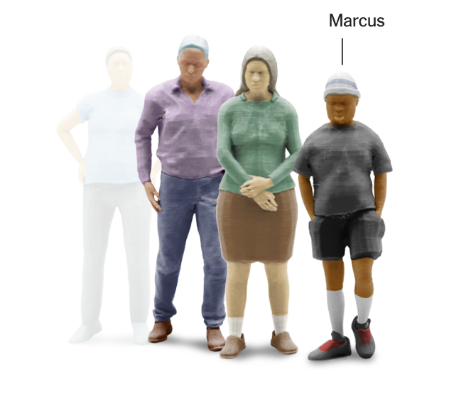
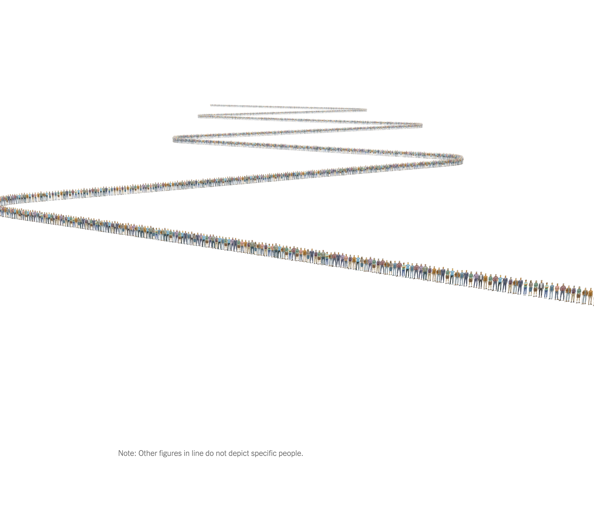

Each year, thousands of viable organs never reach the patients who need them most.
Marcus was at the top of the list—first in line.
But the kidney didn't go to him.
Or to the next person in line.
Or to the next.
It went to a middle-aged man 3,557 spots further down.
Some organ procurement organizations skip steps or prioritize speed, potentially leaving patients behind.
How can we improve the system to ensure fairness and transparency?